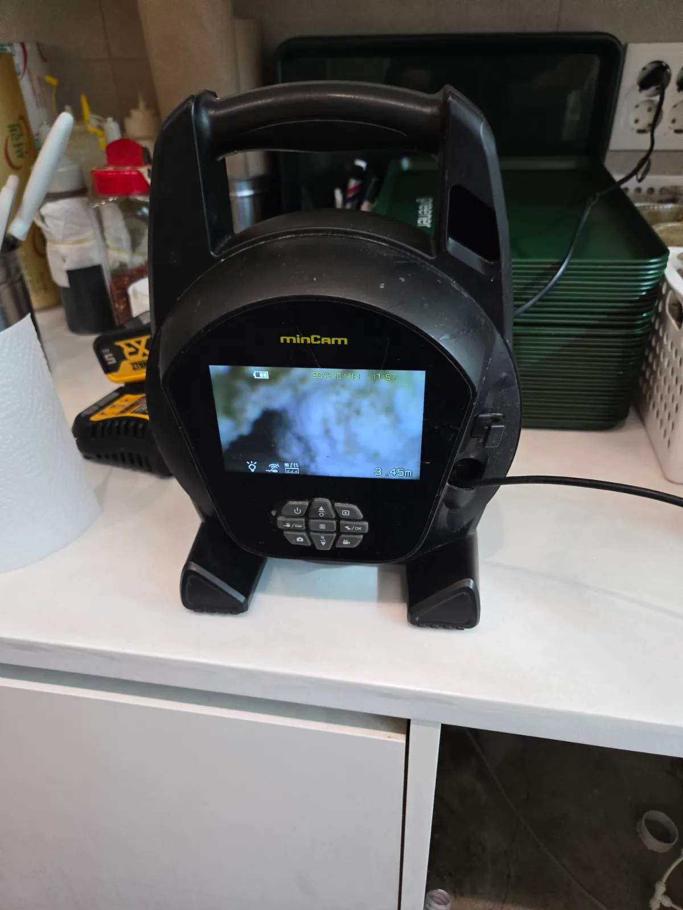

강남구 역삼동 싱크대막힘, 현장 도착 후 진단
강남구 역삼동 샐러드카페에서 긴급한 싱크대역류 연락을 받고 석션기와 배관 전문 장비를 준비해 신속하게 출동했습니다. 카페 싱크대막힘은 세척 작업과 영업에 직접적인 영향을 주기 때문에 빠른 조치와 정확한 원인 진단이 중요합니다.
현장 점검 결과 싱크대 배관의 구배가 좋지 않았으며, 수평으로 이어지는 횡주관 구간도 상당히 길었습니다. 배관 구배가 충분하지 않은 긴 횡주관은 배수 속도가 떨어지기 때문에 오수와 기름 성분이 내부에 쉽게 정체될 수 있습니다.
신라건축설비는 막힌 배관만 뚫고 끝내지 않고 싱크대막힘이 반복되는 구조적인 원인까지 함께 확인합니다. 이번 역삼동 싱크대역류 역시 배관 구배와 횡주관 길이를 확인한 뒤 석션과 샤프트 작업을 병행하기로 했습니다.
1단계: 증상 확인과 필요한 장비 작업
싱크대 하부 배관에 산업용 석션기를 연결해 긴 횡주관 내부에 고여 있던 오수와 기름때, 음식물 찌꺼기를 흡입했습니다. 오염물이 한 번에 제거되지 않아 상태를 확인하며 총 세 차례 석션작업을 반복했습니다.
사진처럼 석션기 안에는 탁한 오수와 기름 성분이 다량으로 흡입됐습니다. 횡주관에 정체된 오염물을 충분히 제거한 뒤 배관 내시경을 약 3.45m 지점까지 투입해 역삼동 싱크대막힘 구간과 남아 있는 오염 상태를 점검했습니다.

2단계: 원인 구간 처리와 정상 작동 확인
석션작업으로 오수는 제거됐지만 긴 횡주관 벽면에 붙어 있는 기름때와 오염층이 남아 있었습니다. 리지드 샤프트를 배관 내부로 투입해 회전시키면서 횡주관 전체를 집중적으로 배관스케일링했습니다.
샤프트 작업 후 충분한 양의 물을 흘려보내 통수시험을 진행했습니다. 강남구 역삼동 싱크대 배관으로 물이 막힘 없이 시원하게 내려가고 싱크대역류가 해소된 것을 확인한 뒤 작업을 마무리했습니다.

작업 결과와 재발 방지 안내
강남구 역삼동 샐러드카페 싱크대막힘은 세 차례의 석션작업과 리지드 샤프트 배관스케일링으로 통수 기능을 회복했습니다. 오수만 흡입하고 끝내지 않고 배관 내시경으로 내부를 점검한 뒤 긴 횡주관의 오염층까지 정리했습니다.
이번 현장은 배관 구배가 좋지 않고 횡주관 구간이 긴 구조라 앞으로도 기름때와 오수가 쉽게 정체될 수 있습니다. 구조적인 조건을 설명하고 음식물과 기름 성분의 유입을 줄이는 관리 방법과 정기적인 배관세척의 필요성을 안내했습니다.
해당 샐러드카페는 싱크대막힘이 자주 반복되는 만큼 이번 작업을 계기로 신라건축설비에 지속적인 배관 점검과 관리를 맡기기로 했습니다. 배관 구조를 이미 파악한 현장이므로 향후 막힘이 발생하더라도 더욱 빠르게 대응할 수 있습니다.
신라건축설비는 싱크대막힘과 하수구막힘 같은 긴급 배관 문제부터 카페·음식점의 반복적인 횡주관막힘, 공용배관 세척과 대형 배관공사까지 대응합니다. 서울·경기·인천 전 지역에 24시간 긴급출동하며 정확한 원인 진단과 전문 장비를 바탕으로 당일 해결을 목표로 작업합니다.
강남구 싱크대막힘, 역삼동 싱크대막힘, 역삼동 싱크대역류, 카페 싱크대막힘, 횡주관막힘, 배관 구배 불량, 석션작업, 배관 내시경 또는 샤프트 배관스케일링이 필요하다면 막힘 전문 신라건축설비가 신속하게 출동하겠습니다.
최종 조치: 긴 횡주관에 정체된 오수와 기름때를 총 세 차례 석션한 뒤 배관 내시경으로 내부 상태를 확인했습니다. 이후 리지드 샤프트를 투입해 횡주관 내부를 배관스케일링하고 충분한 통수시험까지 진행했습니다.
현장 방문 전 확인하는 비용과 작업 범위
신라건축설비는 현장 증상과 배관 구조를 확인한 뒤 필요한 작업과 예상 비용을 안내합니다. 단순 관통으로 해결되는지, 배관내시경·석션·고압세척 또는 추가 장비가 필요한지는 현장 상태에 따라 달라집니다. 출장비와 야간 작업비, 추가 장비 비용이 발생할 수 있는 경우 작업 전에 먼저 설명하고 동의를 받은 범위에서 진행합니다.
업체를 선택할 때 확인할 사항
무조건적인 ‘0원’ 표현보다 실제 작업 범위, 추가 비용 조건, 사용 장비와 사후 대응 기준을 확인하는 것이 중요합니다. 해결되지 않았을 때의 비용 기준과 작업 후 동일 증상 발생 시 점검 범위를 사전에 문의해두면 불필요한 분쟁을 줄일 수 있습니다.
강남구 싱크대막힘 자주 묻는 질문
싱크대 물이 천천히 내려가면 바로 점검해야 하나요?
강남구 역삼동 샐러드카페 싱크대에서 물이 원활하게 내려가지 않고 오수가 다시 올라오는 싱크대역류가 발생했습니다. 이전에도 싱크대막힘이 자주 발생했던 곳으로, 단순한 일회성 막힘보다 배관 구조까지 함께 점검해야 하는 상황이었습니다.처럼 증상이 나타나더라도 원인은 현장마다 다를 수 있습니다. 장비와 배관 구조를 확인한 뒤 필요한 작업 범위를 안내합니다.
작업 전 비용을 알 수 있나요?
작업 전 증상과 현장 여건을 확인해 예상 범위와 비용을 먼저 안내합니다. 변기 탈거, 장비 추가 투입 또는 공용배관 작업이 필요한 경우 고객 동의 없이 임의로 진행하지 않습니다.
약품으로 해결되지 않으면 어떻게 하나요?
완료 후 정상 작동을 함께 확인하고 작업 범위에 따른 사후 안내를 드립니다. 동일 증상이 반복되면 현장 기록을 기준으로 원인을 다시 점검합니다.
싱크대막힘 서울·경기 출동지역
신라건축설비는 강남구 역삼동 현장을 포함해 서울 25개 구와 경기도 31개 시·군의 배관 문제를 상담합니다. 현장 거리와 기사 배정 상황에 따라 출동 가능 여부를 먼저 안내드립니다.
서울 전 지역
강남구 · 강동구 · 강북구 · 강서구 · 관악구 · 광진구 · 구로구 · 금천구 · 노원구 · 도봉구 · 동대문구 · 동작구 · 마포구 · 서대문구 · 서초구 · 성동구 · 성북구 · 송파구 · 양천구 · 영등포구 · 용산구 · 은평구 · 종로구 · 중구 · 중랑구
경기도 주요 출동지역
수원시 · 용인시 · 고양시 · 화성시 · 성남시 · 부천시 · 남양주시 · 안산시 · 평택시 · 안양시 · 시흥시 · 파주시 · 김포시 · 의정부시 · 광주시 · 하남시 · 광명시 · 군포시 · 양주시 · 오산시 · 이천시 · 안성시 · 구리시 · 의왕시 · 포천시 · 양평군 · 여주시 · 동두천시 · 과천시 · 가평군 · 연천군